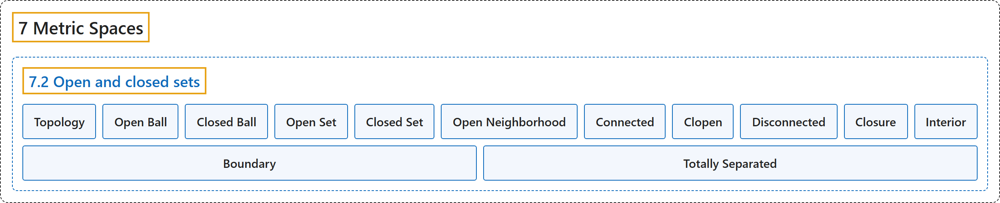

7.2 Open and closed sets
Classification

Glossary
| Term | Definition | 中文翻译 | Source |
|---|---|---|---|
| 7.2 Open and closed sets 开集与闭集 |
(No definition) | （无定义） | Lebl, 2026, section 7.2 |
| Topology 拓扑 |
"Before we get to convergence, we define the topology. That is, we define the notion of open and closed sets." | 在讨论收敛之前，先定义拓扑，即定义开集与闭集的概念。 | Lebl, 2026, section 7.2 |
| Open Ball 开球 |
"Let \((X,d)\) be a metric space, \(x \in X\), and \(\delta > 0\). Define the open ball, or simply ball, of radius \(\delta\) around \(x\) as \(B(x,\delta) := \bigl\{ y \in X : d(x,y) < \delta \bigr\}\)." | 设 \((X,d)\) 是度量空间，\(x \in X\)，\(\delta > 0\)。定义以 \(x\) 为中心、半径为 \(\delta\) 的开球（或简称球）为 \(B(x,\delta) := \bigl\{ y \in X : d(x,y) < \delta \bigr\}\)。 | Lebl, 2026, Definition 7.2.1 |
| Closed Ball 闭球 |
"Define the closed ball as \(C(x,\delta) := \bigl\{ y \in X : d(x,y) \leq \delta \bigr\}\)." | 定义闭球为 \(C(x,\delta) := \bigl\{ y \in X : d(x,y) \leq \delta \bigr\}\)。 | Lebl, 2026, Definition 7.2.1 |
| Open Set 开集 |
"Let \((X,d)\) be a metric space. A subset \(V \subset X\) is open if for every \(x \in V\), there exists a \(\delta > 0\) such that \(B(x,\delta) \subset V\)." | 设 \((X,d)\) 是度量空间。若对每个 \(x \in V\)，存在 \(\delta > 0\) 使得 \(B(x,\delta) \subset V\)，则子集 \(V \subset X\) 是开的。 | Lebl, 2026, Definition 7.2.4 |
| Closed Set 闭集 |
"A subset \(E \subset X\) is closed if the complement \(E^c = X \setminus E\) is open." | 若补集 \(E^c = X \setminus E\) 是开的，则子集 \(E \subset X\) 是闭的。 | Lebl, 2026, Definition 7.2.4 |
| Open Neighborhood 开邻域 |
"If \(x \in V\) and \(V\) is open, then we say \(V\) is an open neighborhood of \(x\) (or sometimes just neighborhood)." | 若 \(x \in V\) 且 \(V\) 是开集，则称 \(V\) 是 \(x\) 的开邻域（有时简称邻域）。 | Lebl, 2026, Definition 7.2.4 |
| Connected 连通 |
"A nonempty metric space \((X,d)\) is connected if the only subsets of \(X\) that are both open and closed (sometimes called clopen subsets) are \(\emptyset\) and \(X\) itself." | 若 \(X\) 中既开又闭的子集（有时称为既开又闭子集）只有 \(\emptyset\) 和 \(X\) 本身，则称非空度量空间 \((X,d)\) 是连通的。 | Lebl, 2026, Definition 7.2.13 |
| Clopen 既开又闭 |
"A nonempty metric space \((X,d)\) is connected if the only subsets of \(X\) that are both open and closed (sometimes called clopen subsets) are \(\emptyset\) and \(X\) itself." | 若 \(X\) 中既开又闭的子集（有时称为既开又闭子集）只有 \(\emptyset\) 和 \(X\) 本身，则称非空度量空间 \((X,d)\) 是连通的。 | Lebl, 2026, Definition 7.2.13 |
| Disconnected 不连通 |
"If a nonempty \((X,d)\) is not connected we say it is disconnected." | 若非空的 \((X,d)\) 不是连通的，就说它是不连通的。 | Lebl, 2026, Definition 7.2.13 |
| Closure 闭包 |
"Let \((X,d)\) be a metric space and \(A \subset X\). The closure of \(A\) is the set \(\overline{A} := \bigcap \{ E \subset X : E \text{ is closed and } A \subset E \}\)." | 设 \((X,d)\) 是度量空间，\(A \subset X\)。\(A\) 的闭包是集合 \(\overline{A} := \bigcap \{ E \subset X : E \text{ is closed and } A \subset E \}\)。 | Lebl, 2026, Definition 7.2.18 |
| Interior 内部 |
"Let \((X,d)\) be a metric space and \(A \subset X\). The interior of \(A\) is the set \(A^\circ := \{ x \in A : \text{there exists a } \delta > 0 \text{ such that } B(x,\delta) \subset A \}\)." | 设 \((X,d)\) 是度量空间，\(A \subset X\)。\(A\) 的内部是集合 \(A^\circ := \{ x \in A : \text{there exists a } \delta > 0 \text{ such that } B(x,\delta) \subset A \}\)。 | Lebl, 2026, Definition 7.2.23 |
| Boundary 边界 |
"The boundary of \(A\) is the set \(\partial A := \overline{A}\setminus A^\circ\)." | \(A\) 的边界是集合 \(\partial A := \overline{A}\setminus A^\circ\)。 | Lebl, 2026, Definition 7.2.23 |
| Totally Separated 完全分离 |
"Prove that \(\mathbb{Q}\) is totally separated, that is, show that for every \(x, y \in \mathbb{Q}\) with \(x \neq y\), there exist two open sets \(U\) and \(V\) such that \(x \in U\), \(y \in V\), \(U \cap V = \emptyset\), and \(U \cup V = \mathbb{Q}\)." | 证明 \(\mathbb{Q}\) 是完全分离的，即证明对每对 \(x \neq y\) 的 \(x, y \in \mathbb{Q}\)，存在两个开集 \(U\) 与 \(V\)，使得 \(x \in U\)，\(y \in V\)，\(U \cap V = \emptyset\)，且 \(U \cup V = \mathbb{Q}\)。 | Lebl, 2026, Exercise 7.2.5 |
References
Lebl, J. (2026). Basic analysis I & II: Introduction to real analysis (May 22, 2026 edition). Retrieved October 29, 2026, from https://www.jirka.org/ra/html/